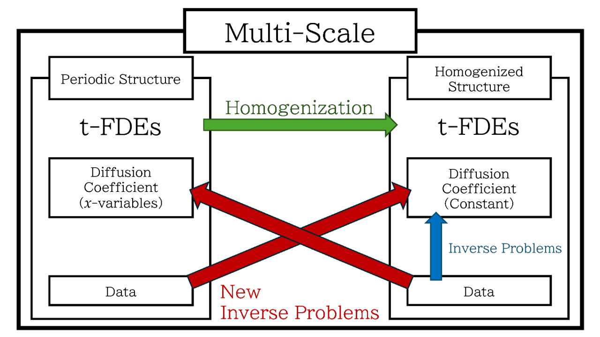

Research
Contents
Research Abstract
Research Topics
- Inverse Problems for Partial Differential Equations
- Anomalous Diffusion/Transport Phenomena
Inverse Problems for Partial Diffrential Eqeuations
-
I have been working on Inverse Problems for partial differential equations arising from mathematical physics. I am interested in the problem of determining the physical coefficient from observation data (Inverse Coefficient Problem) and the problem of determining the source term from observation data (Inverse Source Problem) . In particular, I have been studying Uniqueness and Stability in Inverse Problems by using the Carleman Estimate which is a priori estimate for the solution of partial differential equations. In recent years, I am interested in Anomalous Diffusion Phenomena and Anomalous Transport Phenomena, and I have been studying on inverse problems concerning their phenomena.
Key Words
- Inverse Source Problem
- Inverse Coefficient Problem
- Stability Estimate in Inverse Problem
- Carleman Estimate
Word Cloud
-
This is a word cloud (visualization of text data) created from abstracts of my published articles.
-


Published Articles
-
In this page, published articles are introduced with summaries and comments.
Inverse Problems for Partial Diffrential Eqeuations
-
Atsushi Kawamoto and Masahiro Yamamoto,
Determination of an electromagnetic potential for the Dirac equation,
Inverse Problems 28 (2012) 115012 (26pp).
DOI : 10.1088/0266-5611/28/11/115012For the Dirac equation in the electrostatic field, we investigate inverse problems of determining the electromagnetic potential from boundary data or internal data (inverse coefficient problems) . Using the Carleman estimate for hyperbolic equations, we obtained the Lipschitz type stability estimate in the inverse problems by observations on boundary and observations in interior sub-domain, respectively. Furthermore, in the case of internal observations, we established the Hölder type stability estimate by observing only two components of four components in observation data. -
Atsushi Kawamoto,
Inverse problems for linear degenerate parabolic equations by "time-like" Carleman estimate,
Journal of Inverse and Ill-posed Problems 23 (2015) 1--21.
DOI : 10.1515/jiip-2013-0027We consider the linear degenerate parabolic equations in a cylindrical shaped domain. We investigated the inverse source problems, that is, the inverse problem of determining the time-dependent factor of the source term from the spatial data at an arbitrarily fixed time. We derived the Carleman estimate with the weight function depending only on time. Using the Carleman estimate, we established the uniqueness and the stability estimate of Lipschitz type in inverse source problems. Moreover we extended our results to the case of the strongly coupled line degenerate parabolic system. -
Atsushi Kawamoto,
Hölder stability estimate in an inverse source problem for a first and half order time fractional diffusion equation,
Inverse Problems and Imaging 12 (2018) 315--330.
DOI : 10.3934/ipi.2018014We cosidered the time-fractional diffusion equations containing the 1st order time derivative and the half order time derivative in multi dimmensional case in space. We discussed the inverse problems of determining the time independent source factor in interior sub-domain from spatial data at an arbitrarily fixed time (inverse source problems). Using the local Carleman estimate for parabolic equations, we established the local Carleman estimate for the first and half order time-fractional diffusion equations. Using the Carleman estimate, we obtained the Hölder type stability estimate in the inverse source problem.This article was cited in the following Handbook: -
Atsushi Kawamoto,
Lipschitz stability estimates in inverse source problems for a fractional diffusion equation of half order in time by Carleman estimates,
Journal of Inverse and Ill-posed Problems 26 (2018) 647--672.
DOI : 10.1515/jiip-2016-0029For the one dimensional time-fractional diffusion equations of half order, we investigated inverse problems of determining the time independent factor of the source term from boundary data or internal data in addition to spatial data at an arbitrarily fixed time (inverse source problems). We derived the Carleman estimate with boundary data and the Carleman estimate with internal data for the time-fractional diffusion equations. Using the Carleman estimates, we established the Lipschitz type stability estimates in inverse source problems by boundary observations and interior observations, respectively.This article was cited in the following Handbook:Anatoly N. Kochubei and Yuri Luchko (Editors), Handbook of Fractional Calculus with Applications. Volume 2, Fractional Differential Equations, Berlin: De Gruyter, 2019. [ web ]
-
Atsushi Kawamoto and Manabu Machida,
Lipschitz Stability in Inverse Source and Inverse Coefficient Problems for a First- and Half-order Time-fractional Diffusion Equation,
SIAM Journal on Mathematical Analysis 52 (2020) 967--1005. (39 pages)
DOI : 10.1137/18M1235776We considered inverse problems of determining the time independent factor of the source term (inverse source problem) and of detemrming the diffusion coefficient and other coefficients (inverse coefficient problem) for a first- and half-order time fractional equation in multi dimmensional case in space. We derived the Carleman estimate with boundary data and the Carleman estimate with internal data for our equation. We established the Lipschitz type stability estimates in inverse source and inverse coefficient problems by boundary observations and interior observations, in addition to spatial data at an arbitrarily fixed time. -
Atsushi Kawamoto and Manabu Machida,
Global Lipschitz stability for a fractional inverse transport problem by Carleman estimates,
Applicable Analysis 100 (2021) 752--771.
DOI : 10.1080/00036811.2019.1620931We studied the inverse problem of determining the total attenuations and the scattering coefficients (inverse coefficient problems) for a time-fractional radiative transport equation which describes anomalous transport phenomena. We established the Carleman estimate with boundary data for a one-dimensional half-order time-fractional radiative transport equation. Moreover we derived the stability estimate of Lipschitz type in inverse coefficient problems via our Carleman estimate.This article was cited in the following Handbook:Anatoly N. Kochubei and Yuri Luchko (Editors), Handbook of Fractional Calculus with Applications. Volume 2, Fractional Differential Equations, Berlin: De Gruyter, 2019. [ web ]
-
Xinchi Huang and Atsushi Kawamoto,
Inverse problems for a half-order time-fractional diffusion equation in arbitrary dimension by Carleman estimates,
Inverse Problems and Imaging 16 (2022) 39--67.
DOI : 10.3934/ipi.2021040We studied the time-fractional diffusion equations of half order in multi-dimensional case in space and we discussed the inverse source problem and inverse coefficient problem. We derived the Carleman estimate for the multi-dimensional half-order time-fractional diffusion equations. Using the Carleman estimate, we established the stability estimate of Lipschitz type in inverse problems of determining the time-independent factor of the source term or the diffusion coefficient from spatial data at an arbitrarily fixed time. -
Atsushi Kawamoto, Manabu Machida, Masahiro Yamamoto,
Homogenization and inverse problems for fractional diffusion equations,
Fractional Calculus and Applied Analysis 26 (2023) 2118--2165.
DOI : 10.1007/s13540-023-00195-8 / SharedIt by Springer NatureWe proposed new inverse problems related to different structures. First, we derived time-fractional equations in the homogenized structure from time-fractional diffusion equations in the periodic structure via the homogenization. Second, we investigated the uniqueness and the stability in an inverse coefficient problem of determining the constant diffusion coefficient for time-fractional diffusion equations from minimum data. Third, we considered new inverse problems related to different structures. One is the inverse problem of determining the constant diffusion coefficient in the homogenized structure from the data in the periodic structure. The other is the inverse problem of determining the diffusion coefficient in the periodic structure from the data in the homogenized structure. Then we obtained the uniqueness and the stability estimate in these inverse coefficient problems.Here is a conceptual diagram. The two red arrows represent new inverse problems related to different structures proposed in this article.
Researcher ID
- ORCID :
- Atsushi Kawamoto (0000-0002-1334-844X)
- MR Author ID :
- MR: Kawamoto, Atsushi2 - 1011186
- zbMATH Author ID :
- kawamoto.atsushi
- Google Scholar :
- Atsushi Kawamoto - Google Scholar Citations
- researchmap :
- Atsushi Kawamoto - My portal - researchmap